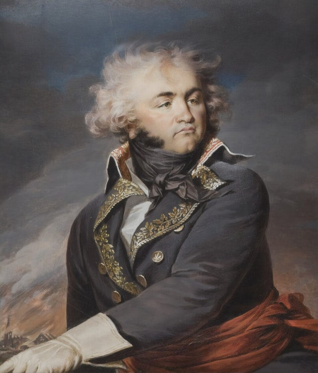
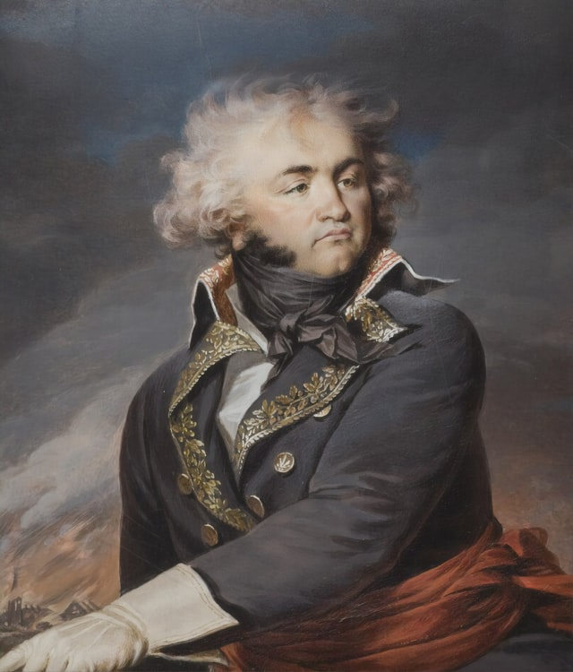

아빠 김병수 엄마 최하림

김이솔의 산파 구실을 한 의사 김경서는 김이솔이 태어나고 약 열흘 뒤 코로나19에 확진된다
확진 후 코로나 잠복기에 있던 산파 김경서의 진료를 받은 바 있는 엄마 최하림은
조리원에서 퇴소 후 확진자와 동선이 겹친다는 이유로 열흘 정도 자가격리에 들어갔고
상당히 상심이 컸다.
하지만 상심도 잠깐.코로나 격리대상에 대한 지원금이 있다는 첩보를 접한 최하림은 급방긋 모드로 들어갔고,
어차피 엄마 구실 좀 해볼라고 밖에 못나가는 거, 꽁돈이나 받아 먹자는 마음으로 거실에 드러누웠다.
코로나19 검사 결과는 당연히 음성.양성 걸릴 정도면 김경서가 얼굴에 침을 뱉을 정도가 됐어야 했다.
아빠 김병수는 뭐 그러려니 한다.
지금 그 시국에 코로나19에 확진 받은 사람이 한둘이랴 하는 심정이었다.